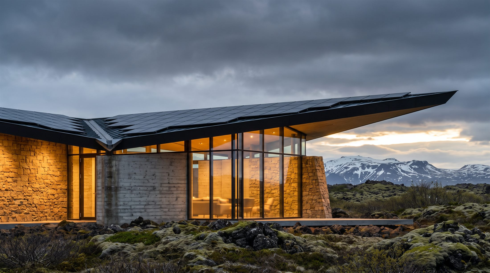
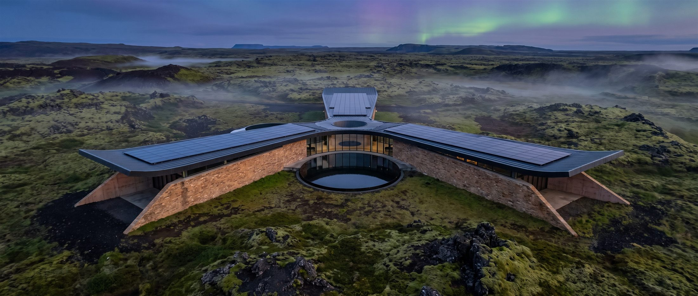
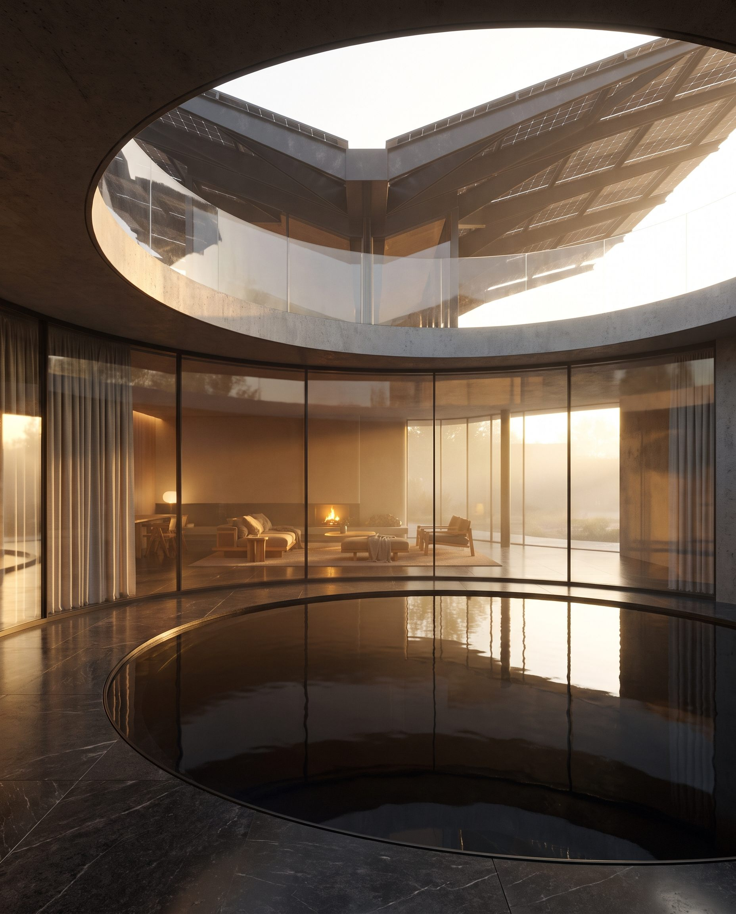
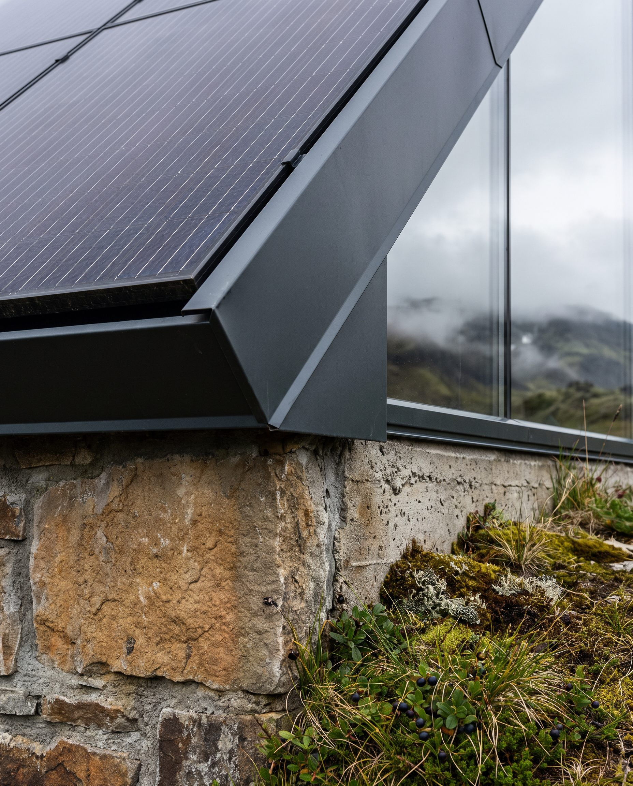

AURELIA designs the ground and the structure as one act — every building begins as a reading of its site.
We don't design buildings and then landscape around them. We read a site's topography, light, water and wind first — the architecture is what the land was already asking for.
Three wings radiate from a circular courtyard atrium. Drag to orbit, scroll to zoom, step inside the courtyard, or switch to the floor plan — the same model our engineers work from.




Topography, sunlight paths, water flow, prevailing wind, existing vegetation — surveyed before a single line is drawn.
The land's constraints become the design brief: where it slopes, where it floods, where it should stay untouched.
Massing and structure respond directly to the site reading — never a template dropped onto a plot.
Planting, grading and hardscape are designed alongside the building, not after it — one continuous plan.
Construction documentation and on-site supervision through to handover, with the landscape maturing on schedule.
AURELIA is a nine-person studio working across architecture and landscape design. Every project carries a climate-responsive strategy — passive solar orientation, native planting, permeable ground — because a building that ignores its site ages badly, no matter how it photographs on day one.
Send a plot, an address, or just a slope you love. We'll tell you what it wants to become.
studio@aurelia.example